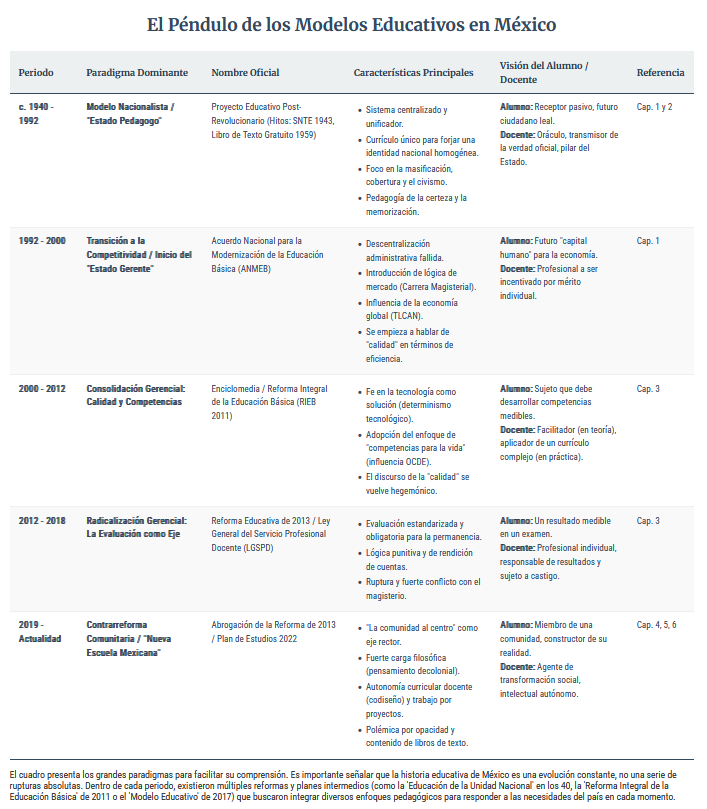

"A principios de los años noventa, México vivía una era de profundas contradicciones... el futuro de millones se forjaba en las aulas."
Desliza para abrir la investigación
El Acuerdo Nacional para la Modernización (ANMEB) de 1992 fue un intento de reforma administrativa que no se atrevió a ser una reforma política. Se transfirieron problemas, pero no poder real.
"La predictibilidad del aula preparaba para la predictibilidad de la fábrica."
Lejos de ser un accidente, el silencio normativo y la tarima del docente respondían a una lógica: asegurar la transmisión fidedigna de saberes en un país que necesitaba cohesión.
Un ciclo de reformas que oscila entre el Estado Pedagogo y el Estado Gerente.

"Nos piden ser investigadores y tecnólogos, pero con el mismo sueldo y sin formación. Es un salto al vacío."
— Voz del Magisterio"El nuevo modelo obliga a las familias a buscar fuera de la escuela la preparación que el sistema público dejó de ofrecer."
— Voz de los Padres